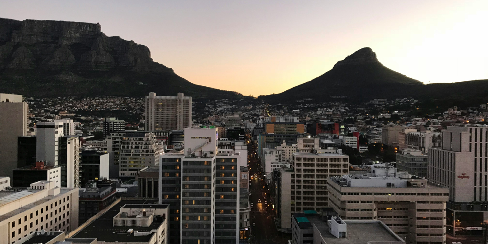
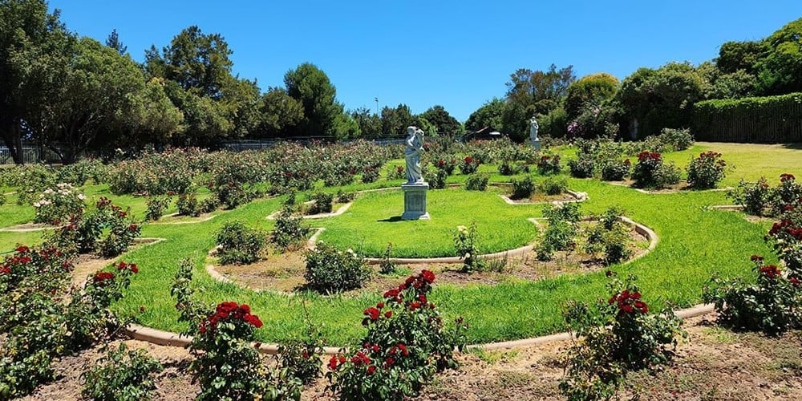
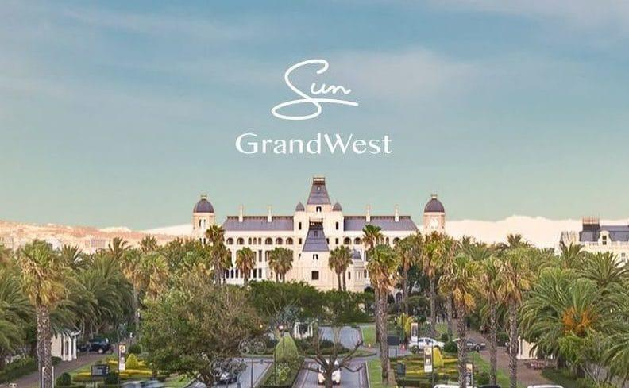
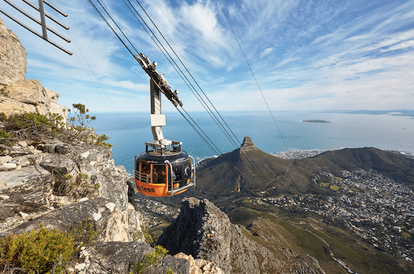

Cape Town🌆
Cape Town has stunning natural beauty, with iconic landmarks like Table Mountain and beautiful beaches. The city offers a rich cultural experience, vibrant food scenes, and outdoor adventures like hiking, surfing, and wildlife encounters. Its diverse mix of history, art, and warm climate, along with friendly locals, makes it a unique and inviting destination.
Things to do in Cape Town
Strawberry-Picking at Polkadraai
Polkadraai Farm offers a range of fun family-friendly activities. Visitors can enjoy strawberry picking, the bike park, tractor rides, mini-golf, pony rides, a playground, face painting, pedal karts, and arts & crafts.
Visit GrandWest in Goodwood
GrandWest Casino offers gambling, ice skating, bowling, cinemas, arcade games, restaurants, live entertainment, and kids' activities like laser tag and a play area. It's a top spot for fun and entertainment in Cape Town for all ages.
Take a trip to Table Mountain
Table Mountain offers a cableway ride, hiking, abseiling, nature walks, picnicking, and photography, making it a top spot for nature and adventure lovers.